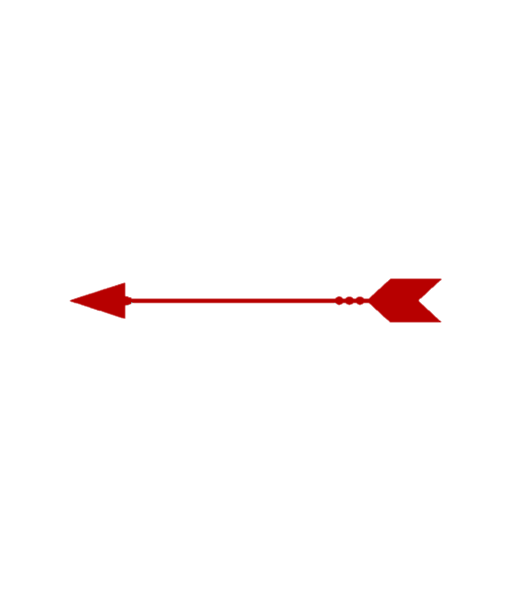

Um guia de todas as armas e magias ja portadas pelo
Deus da Guerra
Lancado em 22 de marco de 2005 para Playstation 2
O primeiro jogo dessa saga que ficou marcada por geracoes
Foi lancado na America do Norte em 13 de marco de 2007
Ganhou o Golden Joystick por ser o "Jogo do Ano de 2007 do Playstation"
Lancado em 16 de marco de 2010 para o Playstation 3
O game que marca o fim dos Deuses do Olimpo
O jogo lancou em 20 de abril de 2018 e é um lançamento exclusivo do PlayStation 4
Kratos depois de tudo que fez, busca um recomeco nas terras gelidas do Norte